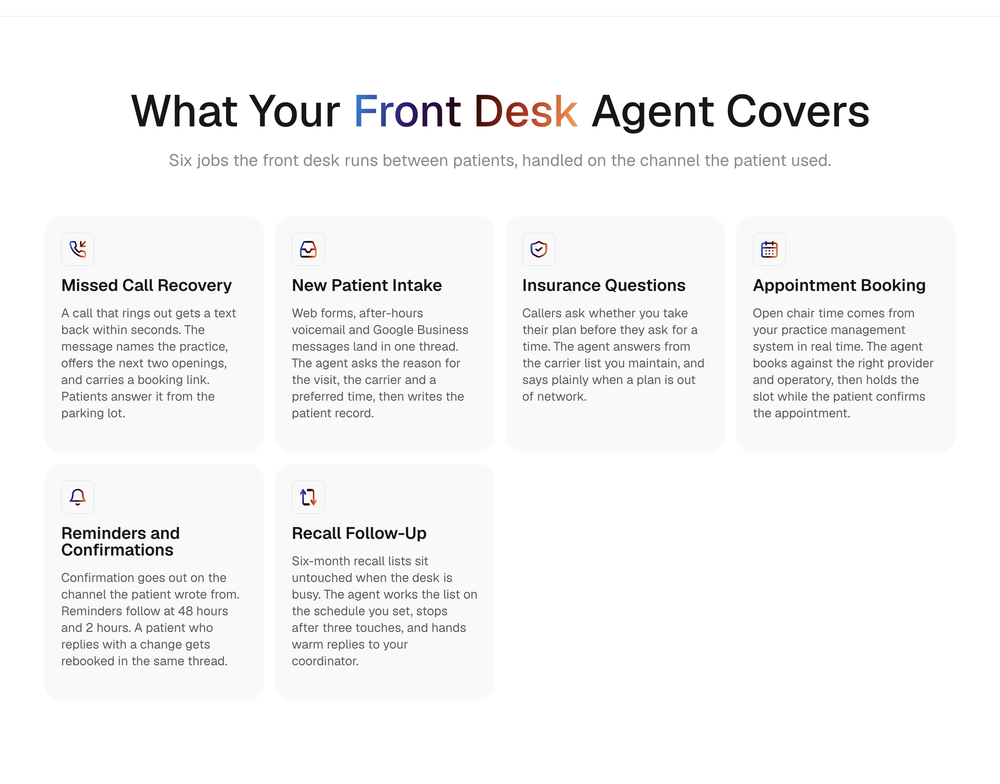
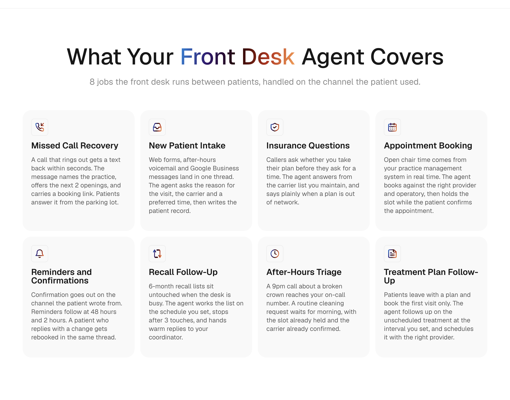
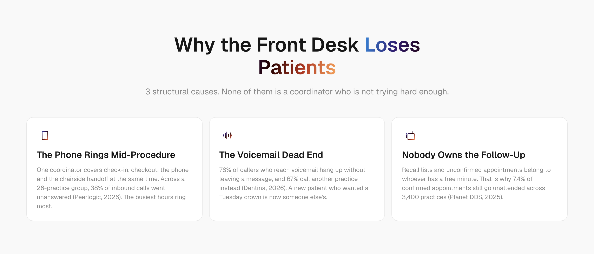
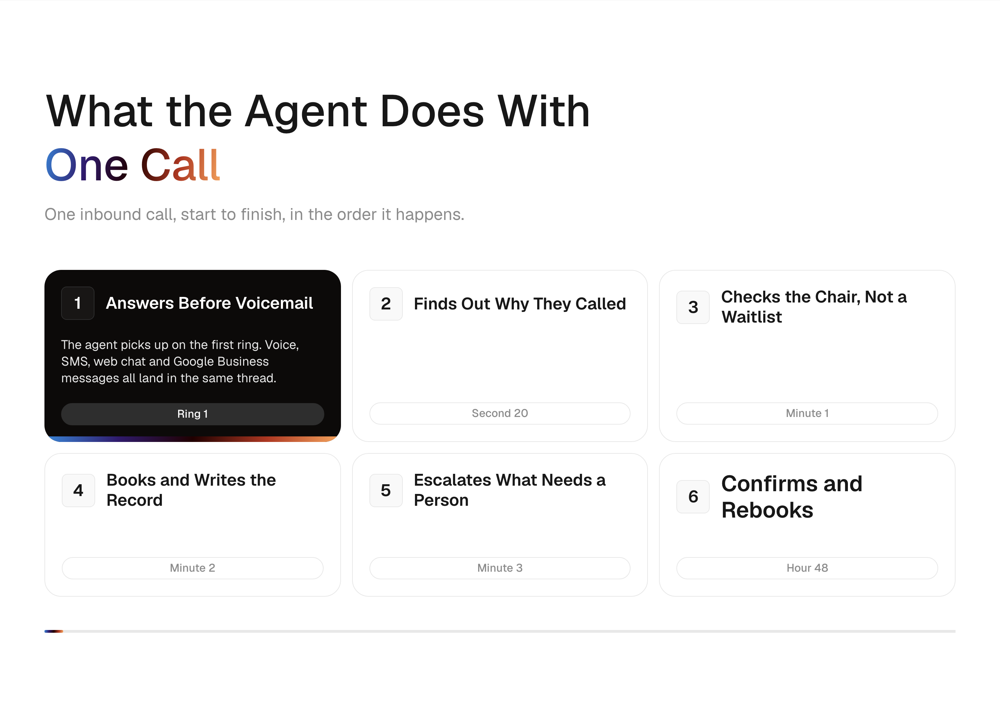
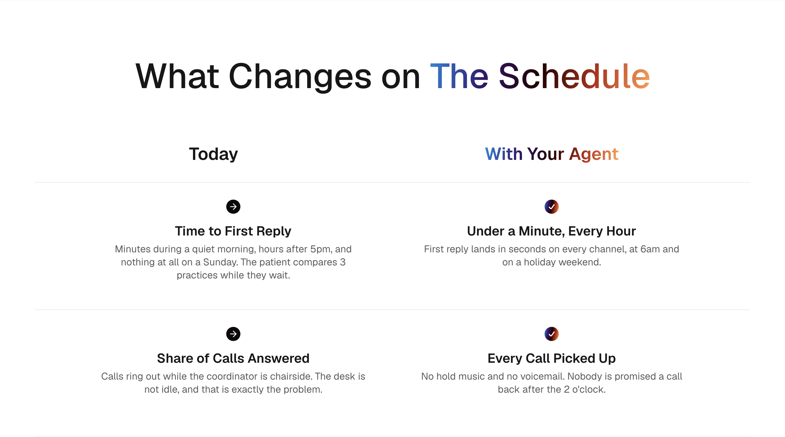
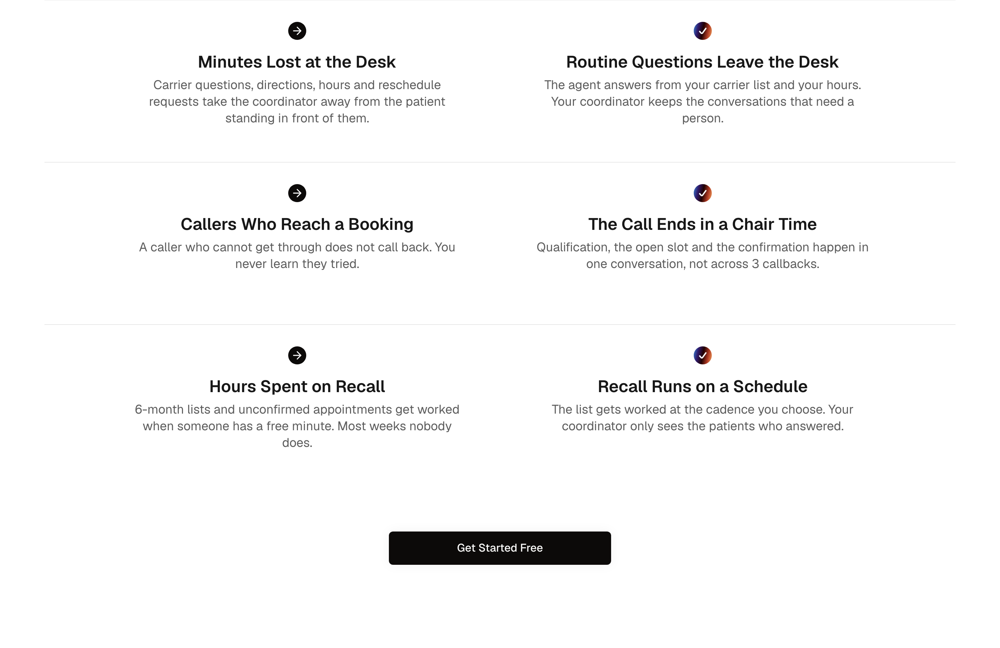
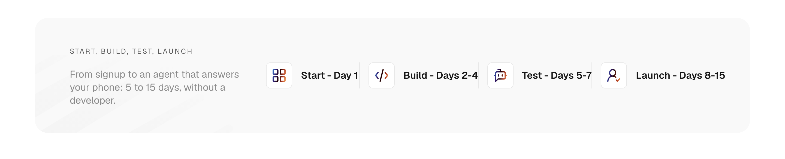
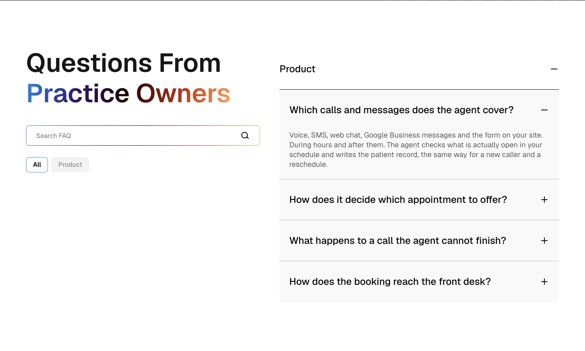
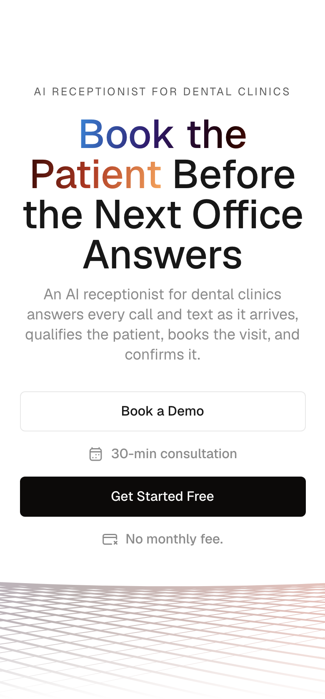
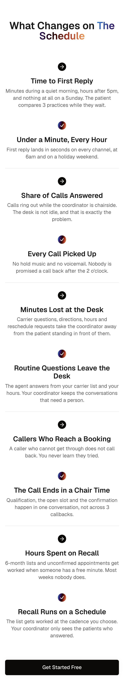

Эта презентация показывает, как работает система: что она получает на входе, что выдаёт на выходе, как проверяет саму себя и где всё-таки нужен человек. Без инструкций — только демонстрация.
Каждый шаг — отдельный человек и отдельное ожидание. Макет рисуется заново под каждую страницу, даже если страница по сути такая же, как десять предыдущих.
Проверка качества — чей-то взгляд на последнем шаге. Что именно проверяли, нигде не записано.
Как выглядит каждый вид секции, решено один раз — когда секцию заводили в библиотеку. На конкретной странице этот вопрос уже не поднимается.
Остаётся два вопроса: какие секции нужны и что в них написано. Оба — про содержание, не про рисование.
Это не «ИИ рисует дизайн». Это сборка из готовых, заранее утверждённых деталей — и набор проверок, которые не дают собрать неправильно.
Никаких картинок, никаких макетов. Описание того, что должно быть на странице и зачем.
| Что | Значение |
|---|---|
| Тема | Приём звонков и запись пациентов в стоматологии |
| Тип | Отраслевая посадочная, облегчённая: без цен, без сравнения с конкурентами, без блока безопасности |
| Ключевой запрос | AI receptionist for dental clinics |
| Призыв | Get Started Free |
На сайте уже есть похожие страницы по клинингу и юрфирмам — значит, есть с чем сверять плотность, тон и структуру.
В списке проверенных фактов компании нет ни одной цифры по медицине, и медицина отдельно помечена как область, где нельзя называть чужие программы. Странице придётся справиться без выдуманных цифр и без выдуманных интеграций.
Секция — это не картинка, а роль. Система знает, какую работу выполняет каждый вид и сколько элементов в нём уместно.
Новая секция заводится только если выполнены три условия сразу: ни одна существующая не закрывает эту роль, появляется реально новый механизм, и секция пригодится минимум на двух будущих страницах. Не больше одной новой на страницу.
Все девять взяты из библиотеки. Уникальность страницы даёт комбинация секций, их порядок, плотность и текст — а не новые визуальные конструкции.
Чем нельзя подменить что. Сколько призывов к действию на странице и где они стоят. Какая арка у страницы по умолчанию.
Запрещённые слова и обороты. Длина заголовка, описания, ответа на вопрос. Ритм: три предложения подряд одной длины — признак машинного текста.
Список цифр с источниками, названий программ и определений, которые разрешено ставить на страницу. Всё остальное — нельзя.
Свободен ли адрес, нет ли уже такой страницы, не конкурирует ли ключевой запрос с существующими. Три независимых источника, все обязательны.
Каждую секцию ТЗ сопоставить с видом из библиотеки. Для каждой записать, почему выбран именно он и почему не нужен новый.
По своду правил, с цифрами только из утверждённых фактов. Если текст пришёл от маркетинга — переносится дословно, без единой правки.
Одиннадцать ворот, каждое «сдал / не сдал». Потом независимая проверка другим участником. Потом — черновик, который публикует человек.
На этом прогоне первые три фазы заняли меньше времени, чем четвёртая. Так и должно быть.
Заполненное ТЗ. Здесь записаны все решения, принятые до сборки, и — обязательно — каждое отступление от шаблона с объяснением почему.
Это то, с чем сверяют страницу через полгода.
Список секций и их содержимое. Ни одного оформительского решения — только состав и текст.
Лежит в системе управления сайтом как черновик.
Какая секция взята и почему. Что проверено и с каким результатом. Что нашла независимая проверка.
И отдельно — открытые хвосты: что осталось за человеком.
Ворота нельзя уговорить и нельзя забыть. «Почти прошло» не бывает.
| Замечание | Что с ним сделали |
|---|---|
| Цифра в двух секциях четыре замечания: 38%, 78%, 67%, 7.4% — каждая дважды | Цифра принадлежит одной секции. Оставили в разделе про проблему, из таблицы убрали. |
| Заголовок карточки в 5 слов норма 2–4 | «Voicemail Is a Dead End» → «The Voicemail Dead End» |
| Ответ на вопрос в 64 слова норма 40–60 | Сокращён до 58 без потери смысла |
| Описание карточки в 36 слов норма 20–35 | Сокращено на одно предложение, смысл карточки не тронут |
Все четыре типа — вещи, которые человек на вычитке пропускает через раз. Не потому что невнимателен, а потому что их надо считать, а не читать.
Все карточки возможностей вышли одной длины — 31–33 слова. Это не лень: у этого вида секции задана минимальная высота карточки, и при более коротком тексте она выглядит полупустой.
Свод правил прямо говорит: ограничение секции сильнее идеала длины. Записали в отчёт и не стали разбавлять текст водой.
Ни одна автоматическая проверка их не поймала: с точки зрения машины страница была безупречна.
Шесть карточек в сетке на четыре колонки оставляют пустое место в два столбца. В файле это не видно никак.
Названия значков выглядели разумно, но у этого вида секции свой словарь, и всё незнакомое молча превращается в одну и ту же заглушку.
Пять шагов рассказа встали как четыре плюс один. Добавили шестой шаг — тот, который и по смыслу был нужен.
Поэтому в процессе есть обязательный шаг: снять страницу целиком, по секциям, на большом экране и на телефоне, и посмотреть каждый кадр.
Содержание при этом не подгоняется под сетку. В третьем случае добавили шаг, которого не хватало по смыслу — а не «что-нибудь шестое».



Отдельный участник с доступом только на чтение. Получает страницу, бриф, текст ТЗ и скриншоты — и проверяет всё сам, не доверяя отчёту. Самопроверка перед этим не нашла ничего.
Два из них — серьёзные: страница осталась опубликованной вопреки отчёту, и на неё попала настройка «не показывать в поиске», скопированная с тестовой страницы.
Четыре из них создала предыдущая починка. Плюс главное открытие прогона — про него следующий слайд.
Все четыре — снова следствие предыдущей починки. Сокращение одной строки под лимит сломало требование ТЗ к её форме.
«Всё, что поднималось за четыре круга, закрыто, нового не внесено».
Правка текста вносит регрессии ровно как правка кода. Это главный аргумент за то, чтобы проверка была не разовой, а повторялась после каждого исправления.
Ни одно из 33 замечаний не было придиркой к вкусу. Каждое опиралось на записанное правило — поэтому по каждому было понятно, кто прав.
На страницу попала настройка «не показывать в поисковиках»: её случайно скопировали с соседней тестовой страницы. Заметили, убрали из файла, перезалили. Все остальные правки доехали.
А настройка осталась. Оказалось: инструмент заливки записывает только те поля, которые есть в файле. Удалить поле — не значит стереть значение; страница хранит старое.
Проверка файла — всё чисто, поля же нет. Проверка готовой страницы в браузере — тоже чисто: на рабочем компьютере эта настройка и так включена для всего сайта, она маскирует проблему.
Увидеть можно было только одним способом — спросить у самой системы управления сайтом, что у неё сейчас записано. Именно это и сделал проверяющий.
Последствие шире одной страницы. Записали в общий список ловушек проекта вместе с указанием: перепроверить прошлые пакеты страниц, где поля удаляли тем же способом. Ошибка такого рода тихо доезжает до продакшена.







Их нет в утверждённых фактах — они найдены под эту страницу, с источниками, и лежат в брифе. Пока маркетинг их не примет, страница не публикуется.
Медицина в списке областей, где нельзя выдумывать названия инструментов. Страница говорит «ваша система управления клиникой». Исследованный список сделал бы две секции конкретнее.
Использован общий скриншот продукта, не стоматологический. Требование к нужной картинке записано в отчёт.
У одной словарь всего из четырёх значков — она не годится под задачу из ТЗ. У другой нет собственного заголовка, и раздел выпадает из оглавления страницы.
Какие цифры правда, какие инструменты можно называть, как звучит компания. Это записывается один раз и работает на всех следующих страницах.
Три дефекта этого прогона нашли скриншоты, а не проверки. Взгляд на готовую страницу остаётся обязательным шагом, а не приятным дополнением.
Система доводит страницу до черновика и останавливается. Публикация — всегда человеческое действие, и на этой странице она пока не сделана.
Работа никуда не делась. Она сместилась: с «нарисовать эту страницу» на «договориться, как выглядят все страницы такого типа» — и это делается один раз.
секций на странице, все из библиотеки
новых секций и ноль выдуманных цифр
дефекта вёрстки, которых не увидела ни одна проверка
замечания независимой проверки за четыре круга
Ни одного оформительского решения в файле страницы — и при этом две ошибки, которые дошли бы до продакшена, если бы независимая проверка не была обязательной.
Систему делает работающей не генерация текста. Её делают работающей записанные заранее правила и ворота, которые нельзя уговорить.